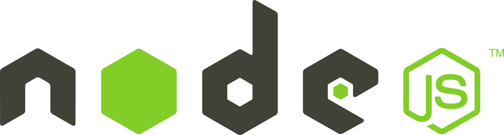
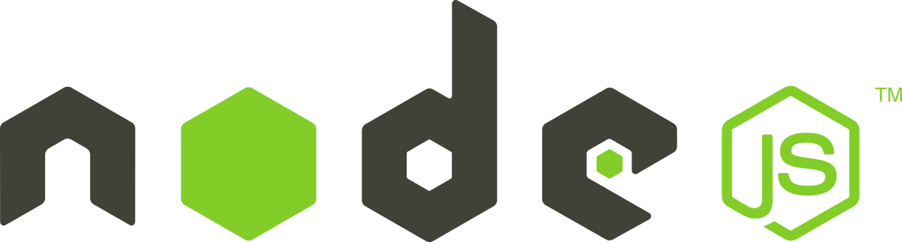

Стартуем с основ JS на сайте по изучению JS
После изучения основ, нужно начинать изучать фреимворк noode.JS
Начать потихоньку собирать свой проект, пока без серверной части
Изучение MongoDB
.

Начать осваивать программирование, понять что это такое
Изучать JS, в том числе его фреймворк node.js
Прописать план действий и конспектировать прогресс
Стартуем с основ JS на сайте по изучению JS
После изучения основ, нужно начинать изучать фреимворк noode.JS
Начать потихоньку собирать свой проект, пока без серверной части
Изучение MongoDB
.
Также предлагаю проводить регулярные встречи для обсуждения прогресса и планов на ближайшую неделю
P.S. Все картинки кликабельны
Design and development from FP